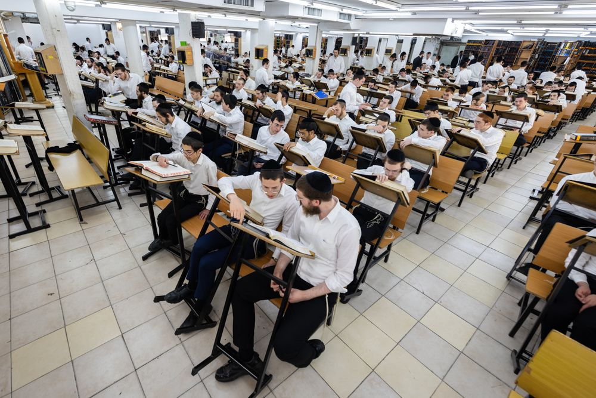
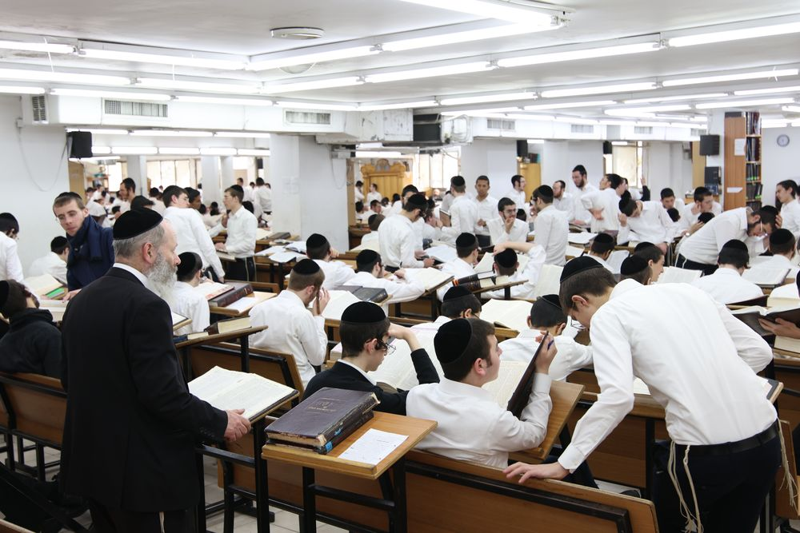
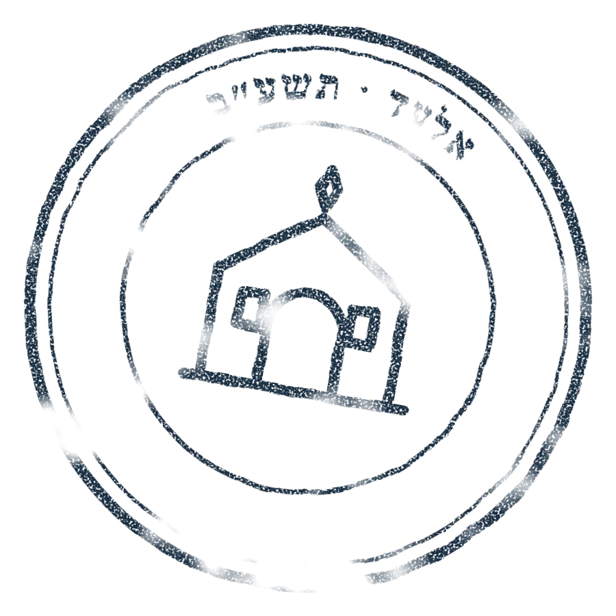
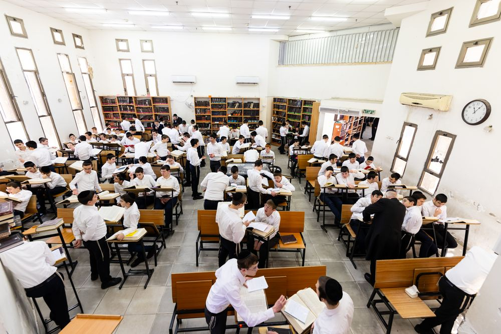
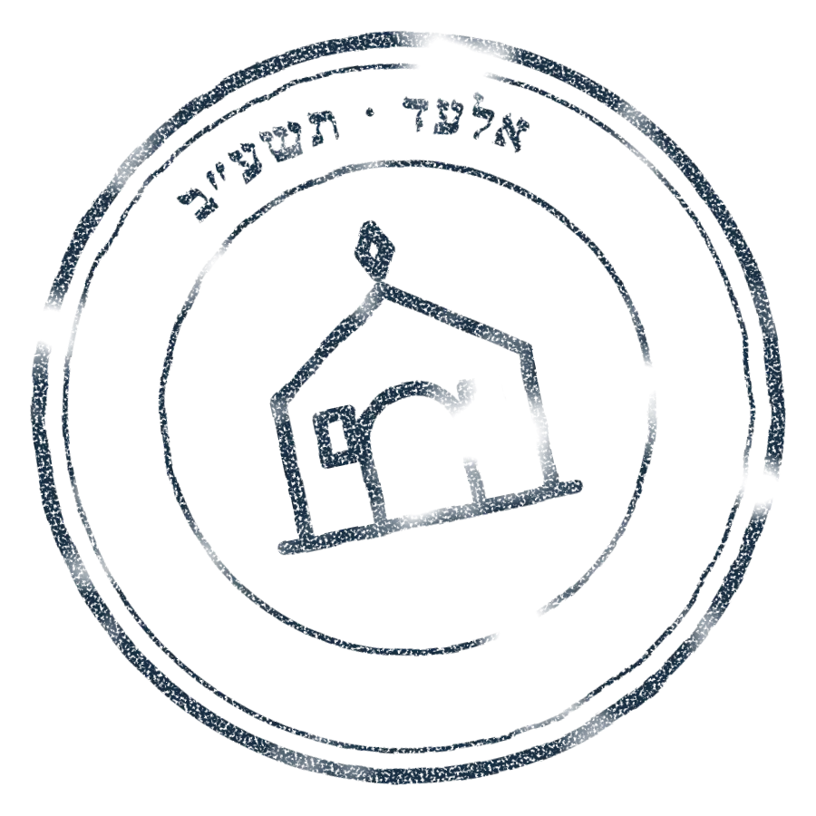
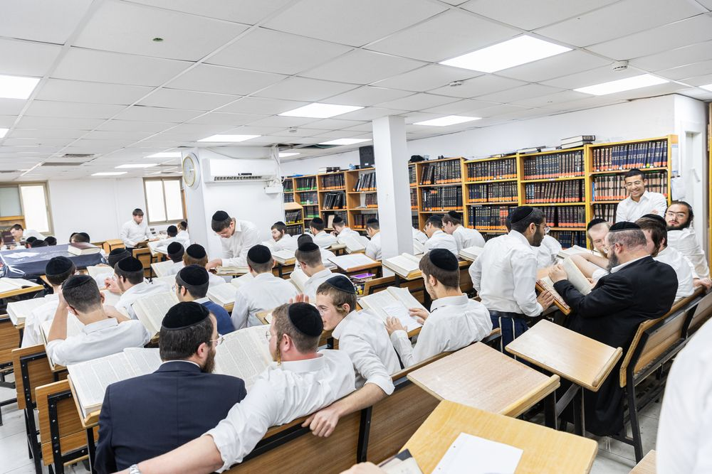
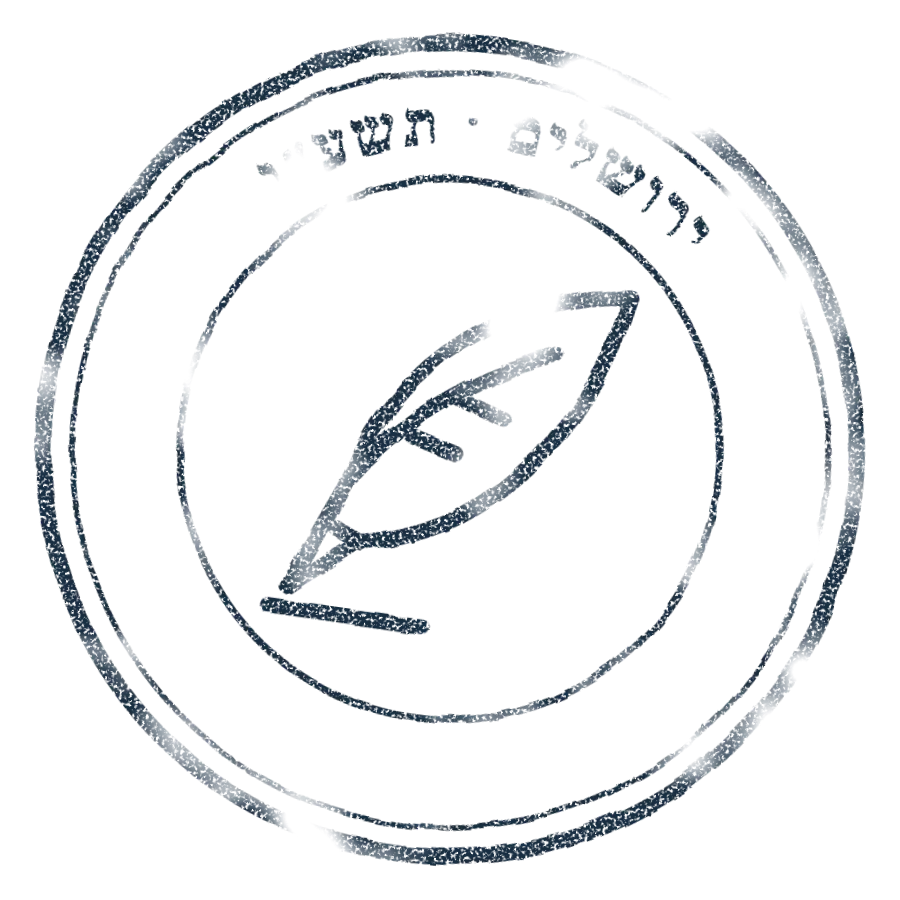
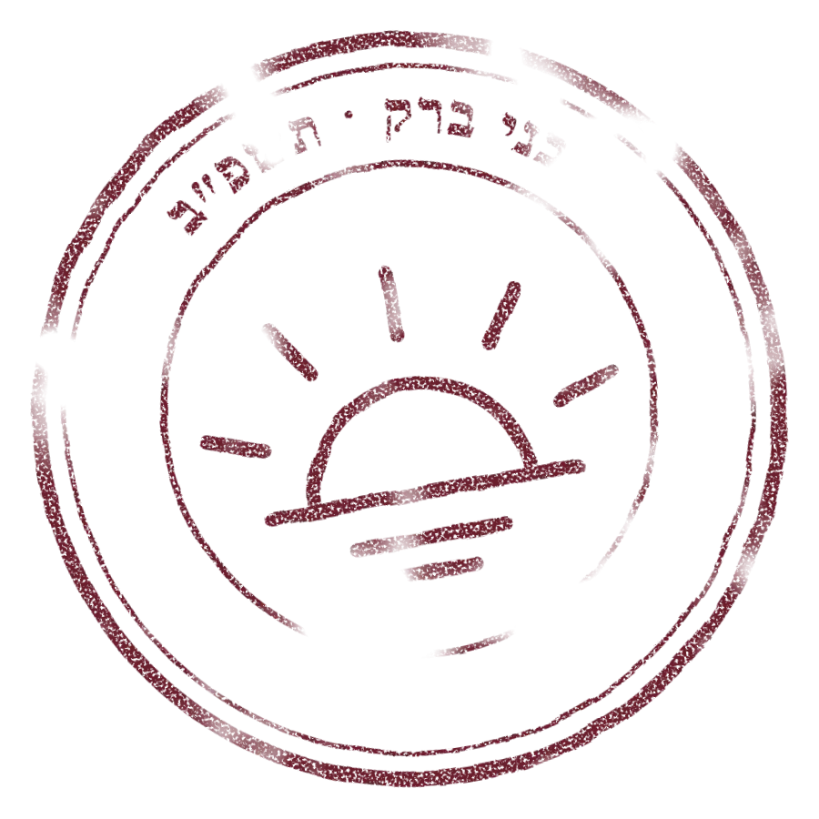
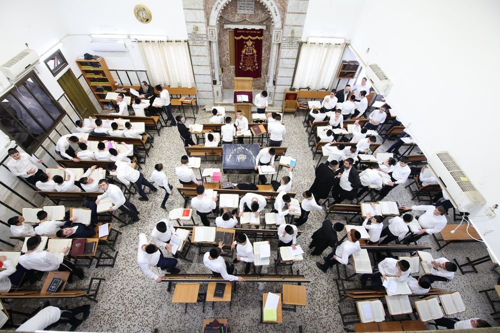
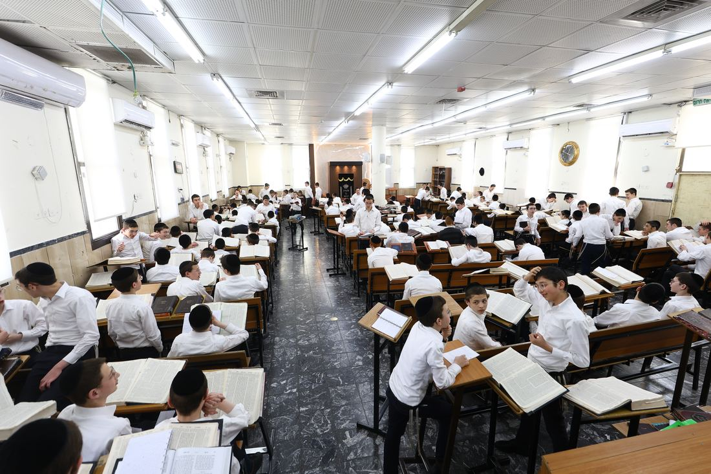

תשנ״ח1998
Yeshivas Orchos Torah
Bnei Brak
In Sivan, Maran Harav Steinman founded the yeshiva in Bnei Brak. It all began here.
To the Yeshiva's Page →

From one yeshiva in a temporary building in Bnei Brak, to a network of yeshivos and kollelim from the Galil to the Negev.
In Sivan תשנ״ח, Maran Harav Aharon Yehuda Leib Steinman zt"l founded Yeshivas Orchos Torah in a temporary building on Rechov Harav Kahaneman in Bnei Brak. At its head he placed two of his talmidim, alumni of Yeshivas Ponevezh: Harav Itamar Garbuz and Harav Baruch Dov Diskin.
From the very start a principle was set that would accompany the yeshiva: unlike the common practice, the shiurim would not be divided by age, so that there would be no competition between talmidim.
As the talmidim multiplied, two more roshei yeshiva were appointed, and the yeshiva moved to a campus on Rechov Shlomo Hamelech.


In Sivan, Maran Harav Steinman founded the yeshiva in Bnei Brak. It all began here.
To the Yeshiva's Page →
Temporary photoA branch of the yeshiva opened in Ashdod, for talmidim from Sephardic communities. For the first time, Orchos Torah went out beyond Bnei Brak.


On 25 Adar the founding gathering was held in Maran's home, and on Rosh Chodesh Iyar 35 talmidim arrived in Karmiel. Torah had come to the Galil.
To the Yeshiva's Page →

The network's first yeshiva ketana, named for the yeshiva in Brisk where Maran learned in his youth.
To the Yeshiva's Page →
At Maran's instruction the yeshiva joined the network, and in Elul תשע״ד it moved from Moshav Zeru'ah to Moshav Otzem in the Lachish region.
To the Yeshiva's Page →
On 5 Teves the yeshiva was founded by Maran. From some 130 bochurim at the start, it has grown to some 1,400.
To the Yeshiva's Page →
A yeshiva ketana in Yerushalayim, named for the sefer of Harav Moshe Sokolovsky, Maran's rebbi.
To the Yeshiva's Page →

The network's youngest yeshiva opened in Bnei Brak, returning to the city where it all began.
To the Yeshiva's Page →From a temporary building on Rechov Harav Kahaneman the yeshiva moved to a campus on Rechov Shlomo Hamelech, and a dormitory was built beside it.
The yeshiva moved into a former school building on Rechov HaZayit, and in 2023 the Orchos Torah organization won the tender for its use.

From caravans on a campus at the entrance to the city toward a permanent building: the cornerstone was laid in March 2023.

From the Gush 80 neighborhood the yeshiva moved in תשע״ט to Rechov Panim Meiros in Romema.
Maran came to the yeshiva many times and said shiurim there, held the title Rosh Yeshiva in the affiliated yeshivos as well, and gave weekly shiurim in his home to the bnei hakibbutz.


Every hour of learning you support is part of this story.
For donations, dedications and sponsoring learning, or any question about the network. We would be glad to get back to you.